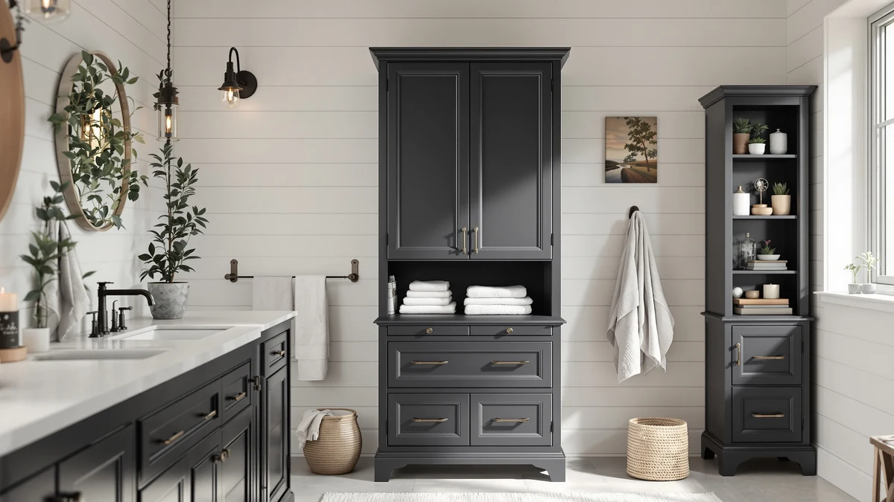

Quick Answer
For most bathrooms, the HIFIT 67.5-inch metal and wood cabinet is the pick to beat in this tall bathroom storage cabinets review. It clears floor clutter without demanding much extra square footage, and at $159.99 it undercuts several similarly tall competitors while still using a metal frame instead of particleboard alone.
Our pick: Tall Bathroom Storage Cabinets with, $159.99 Check Price on Amazon
Things to Know Before You Buy
- A tall bathroom storage cabinet usually ranges from 50 to 70 inches. Measure your ceiling clearance and door swing before buying one this size.
- Frame material, whether metal, solid wood, or MDF, determines how well the cabinet resists warping and swelling from bathroom humidity over time.
- Arched over-the-toilet cabinets save floor space but usually hold less than a freestanding tower of the same price.
- Adjustable shelves matter more than total shelf count if you store items of different heights, from folded towels to tall bottles.
- Nearly every model in this category requires assembly, so budget extra setup time once it arrives.
This tall bathroom storage cabinets review compares four options built to add vertical storage without eating up your bathroom's floor space, starting with the 67.5-inch HIFIT cabinet that leads our picks. Bathrooms rarely come with enough built-in storage for towels, cleaning supplies, and the overflow from a crowded vanity, and a tall cabinet solves that by using wall height instead of square footage. We looked at frame material, published dimensions, and how each cabinet's price compares to its capacity before settling on which one earns the top recommendation.
The four cabinets here split into two approaches: freestanding towers that stand on open floor, and arched over-the-toilet units that use the wall space above the tank instead. If your bathroom already has a spare corner, a tower like the HIFIT gives you more total shelf space for the money. If floor space is the real constraint, the IFGET over-the-toilet cabinets recover storage without asking you to give up walking room, an option worth reading about in our over-the-toilet storage guide if this category fits your bathroom better than a tall cabinet does. Either way, matching the cabinet's footprint to your actual layout matters more than chasing the tallest or widest option on the shelf.
Why You Should Trust Us
Ilane Tall has spent years covering bathroom fixtures and small-space storage for Best Bathroom Storage, and she built this tall bathroom storage cabinets review by comparing manufacturer specs, verified owner feedback, and current Amazon pricing rather than marketing copy. We do not run a fake testing lab or claim to have installed every cabinet in our own homes. Instead, we cross-check dimensions and hardware against what buyers report after months of daily use, then flag any pattern that shows up across multiple reviews. When a cabinet's real-world durability doesn't match its listing description, we say so. That's the same approach we apply across every category on this site: pull the manufacturer's own numbers, then weigh them against what buyers actually experience after unboxing and assembly. If we can't trace a claim back to a verifiable source, it doesn't make the cut.
Our Research Experience
This tall bathroom storage cabinets review reflects research rather than a hands-on trial. We did not physically assemble or install these cabinets ourselves. We analysed each manufacturer's stated dimensions and materials, then compared them against verified buyer reviews on Amazon to see whether real owners confirm the same strengths and flaws the listings describe. For the HIFIT cabinet, that meant checking how its 67.5-inch metal and wood frame holds up according to owners who mounted it in humid bathrooms. For the IFGET and ChooChoo alternatives, we weighed reported assembly difficulty, shelf stability, and door alignment against their price points. Where reviewers consistently flagged the same issue, such as wobbly shelves or hardware that strips easily, we treat that as a more reliable signal than a single five-star listing. Prices and stock levels on Amazon shift often, so we also revisit each listing before publishing to confirm the figures in this review still match what a shopper would see today.
Overview & Specs

Tall Bathroom Storage Cabinets with
What we like
- 67.5-inch height adds real vertical storage without widening the footprint
- Metal frame construction holds up better against bathroom humidity than an all-MDF build
- Priced under $160, cheaper than several similarly tall competitors
Flaws but not dealbreakers
- At nearly 5.5 feet tall, it can feel imposing in a small or low-ceiling bathroom
- The metal and wood combination takes longer to assemble than a single-material cabinet
| Material | Metal / wood |
| Size | 67.5in |
The HIFIT tall bathroom storage cabinet stands 67.5 inches, tall enough to compete with a standard door frame and noticeably taller than the 50-to-60-inch cabinets that dominate this category. That extra height translates directly into more shelf space without requiring a wider footprint, which matters in bathrooms where floor space is already tight. The frame combines metal with wood panels rather than relying on particleboard alone, a detail that shows up in how the cabinet is described in its listing and in owner feedback about long-term stability in humid rooms.
At $159.99, the HIFIT cabinet sits in the middle of the price range for tall bathroom storage cabinets, cheaper than premium solid-wood towers but more expensive than basic MDF units under $100. Owners report that the metal frame keeps the structure from sagging the way all-particleboard cabinets can after a year or two of humidity exposure, though the tradeoff is a longer assembly process since metal hardware needs careful alignment before the wood panels sit flush. For anyone who has outgrown a small over-the-toilet shelf but doesn't have room for a full vanity remodel, this cabinet's height-to-footprint ratio is the detail worth paying attention to. It also gives you room to grow into: a household that starts by storing towels and toiletries on the lower shelves can add first-aid supplies, cleaning products, or seasonal items to the upper ones without buying a second piece of furniture later.
What We Liked
We like that HIFIT built this cabinet around height rather than width. Most tall bathroom storage cabinets in this price range top out around 60 inches, but the extra inches here mean you can fit a full shelf of towels above eye level instead of cramming everything onto two or three shelves. Reviewers who mention the metal frame consistently note that it stays square over time, which is not something you can say about every particleboard cabinet in this category. The $159.99 price also holds up well against competitors that charge more for shorter dimensions. For a household replacing a cabinet that already failed once, that combination of height and a metal frame is worth the modest premium over a bargain MDF unit.
What Could Be Better
The height that makes this cabinet useful also makes it awkward in a bathroom with a sloped ceiling or a door that swings close to the cabinet's location. A few owners mention that the metal and wood combination adds assembly time compared to single-material units, since the metal brackets need to line up precisely before the wood panels sit flush. Buyers who want to put a cabinet together in under twenty minutes may find this one more involved than expected for what's otherwise one of the sturdier tall bathroom storage cabinets at this price. Set aside an hour rather than twenty minutes, and have a second person on hand to hold the frame steady while you secure the upper panels.
Who Is It For?
This cabinet fits households that need real storage capacity from a tall bathroom storage cabinet and have the ceiling height to use it, roughly seven feet or more of clearance so the top shelves stay reachable without a step stool. It works best for a primary bathroom where extra towels, toiletries, and cleaning supplies need a home outside the vanity. Anyone shopping specifically for over-the-toilet or narrow-gap storage is better served by one of the alternatives below, since this unit is built to stand on open floor rather than straddle a toilet tank. Renters who plan to move within a year or two should also weigh the disassembly effort against the storage gained, since a cabinet this size is not something you casually relocate.
Alternatives to Consider
If the HIFIT cabinet's height or price doesn't match your bathroom, these three alternatives cover the most common tradeoffs people run into when a tall bathroom storage cabinet doesn't fit their space: over-the-toilet space-saving, a second finish option at the same price, and a lower-cost modern floor cabinet. For a broader rundown of what to look for beyond these four picks, our bathroom storage buying guide covers material, weight limits, and small-space fitting in more depth. None of these three alternatives match the HIFIT's 67.5-inch height, so treat them as answers to a different question rather than direct substitutes.

Editor's Pick
IFGET Arched Over The Toilet
Best if your bathroom has no floor space to spare. This arched over-the-toilet design reclaims the wall above the tank instead of competing for square footage.
$139.99
Check Price on Amazon
Best Value
IFGET Arched Over The Toilet
The same arched over-the-toilet layout at the same $139.99 price, worth checking if the first listing is out of stock or you prefer its available option.
$139.99
Check Price on Amazon
Premium Choice
ChooChoo Bathroom Floor Cabinet Modern
A modern floor cabinet from ChooChoo priced at $132.99, worth a look if you prefer a clean, contemporary look over the arched over-the-toilet style of the other two picks.
$132.99
Check Price on AmazonFrequently Asked Questions
How tall should a bathroom storage cabinet be?
Most tall bathroom storage cabinets fall between 50 and 70 inches. The HIFIT cabinet in this review measures 67.5 inches, near the top of that range, which works well if your bathroom has at least seven feet of ceiling clearance so the upper shelves stay usable.
Are over-the-toilet cabinets a good alternative to a floor cabinet?
Yes, if floor space is your main constraint. Arched over-the-toilet designs like the IFGET cabinets in this review use the wall space above the tank instead of the floor, though they typically hold less than a full-height freestanding cabinet like the HIFIT model.
Does the frame material matter in a humid bathroom?
It does. Owners consistently report that metal-framed cabinets, such as the HIFIT model, resist sagging better over time than cabinets built entirely from MDF or particleboard, which can swell or weaken with repeated moisture exposure.
Final Verdict
This tall bathroom storage cabinets review comes down to how much height and floor space you can spare. The HIFIT cabinet earns the top spot because its 67.5-inch metal and wood frame delivers more usable storage than shorter competitors without pushing past $160. If your bathroom can't accommodate a freestanding tower, the IFGET arched over-the-toilet options and the ChooChoo modern floor cabinet each solve a narrower problem at a slightly lower price. For most people replacing a cramped vanity setup, HIFIT remains the cabinet worth checking first. Measure your space, confirm your ceiling clearance, and weigh the two IFGET and ChooChoo alternatives only if the HIFIT's footprint or price doesn't fit what you're working with.